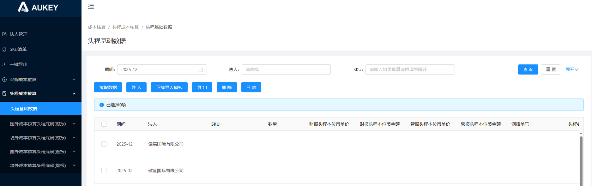

1.需求说明：【财务物流费用/头程数量稽核】海运头程如存在前期已出库（即入账期间为历史月份）的数据，则对应维度的当月二次预估数据的入账期间不会更新为当前期间，导致拉取至当前页面的数据缺少该部分二次预估数据，因此需单独生成；
2.按钮：红字为本次迭代新增(2.1.3.3&筛选条件)
2.1【拉取数据】：（拉取前需删除所筛金蝶法人编码对应法人头程底稿（财报、管报）均为当前期间未关账数据，手工导入不删除）
2.1.1点击按钮弹窗选择【期间】：必录日期框精确到月份单选，默认展示上一自然月；
仅限拉取【期间+调拨单主体金蝶编码】均为【法人管理】模块类型=‘头程底稿（财报）、头程底稿（管报）’对应金蝶法人编码+当前期间的未关账数据，后台存一份金蝶法人编码；生成数据后【数据来源】赋值‘财务物流费用’；
2.1.2拉取数量：确认后按所选期间筛选【财务物流费用/头程数量稽核】对应入账期间数据，再按【入账期间+调拨单主体+调拨单号+SKU+费用模块】维度汇总【成本核算数量】至当前页面对应【期间+法人+调拨单号+SKU+头程类型】的【数量】中；
同时，【单据类型】取该维度下任意一条有值的【差异原因】；若【费用模块】=海运头程费、平台头程费，则【头程类型】赋值海运头程费；
2.1.3拉取海运/空运金额：将2.1.2所取数据根据头程类型+单据类型判断：
2.1.3.1若单据类型不为空，则
①头程类型=海运头程费，按【期间+金蝶法人编码+调拨单号+SKU】在【财务物流费用/海运头程费/费用明细】匹配【入账期间+调拨单主体金蝶编码+调拨单号+SKU】并汇总对应【金额（本位币）】和【费用类型】=‘极致爆款-集团补贴’
‘modernmate事业部-集团补贴’的【金额（本位币）】，并用【金额（本位币）】-【极致爆款-集团补贴的【金额（本位币）】-【modernmate事业部-集团补贴的【金额（本位币）】】将结果赋值至当前页面的【财报头程本位币金额】中；
然后，匹配并汇总对应【分摊金额（本位币）】、分摊金额（本位币）为0的对应【金额（本位币）】和【费用类型】=‘极致爆款-集团补贴’的【金额（本位币）】和modernmate事业部-集团补贴的【金额（本位币）】，
【管报头程本位币金额】=【分摊金额（本位币）+分摊金额（本位币）为0的对应【金额（本位币）】】-【极致爆款-集团补贴的【金额（本位币）】+modernmate事业部-集团补贴的【金额（本位币）】】*2
——匹配时均先排除【调拨单法人】≠【费用法人】且【费用类型】=‘拖车费’或‘港前费’的数据；
②头程类型=空运头程费，按【期间+金蝶法人编码+调拨单号+SKU】在【财务物流费用/空运头程费/费用明细】匹配【入账期间+调拨单主体金蝶编码(空运匹法人主体编码)+调拨单号+SKU】并汇总对应【空运总费用（本位币）】至当前页面
【财报头程本位币金额、管报头程本位币金额】中；
2.1.3.2若单据类型为空，则按【期间+金蝶法人编码+调拨单号+SKU+头程类型】在【财务物流费用/海运头程费或空运头程费(根据头程类型)/费用明细】判断【入账期间+调拨单主体+调拨单号+SKU】的【账单类型】
①若同维度所取账单类型均相同，则执行2.1.3.1逻辑，同时当前页面【单据类型】取所取账单类型即可；
②若同维度所取账单类型不同，若账单类型既存在预估和二次预估，则将账单类型=‘二次预估’当做‘预估’；若所取账单类型仍不同，则当前页面复制生成一条数据，原数据和复制数据单据类型分别为所取账单类型，再基于2.1.3.1逻辑加上
【账单类型】维度分别拉取金额；
——①②特殊处理：当所取的数据 账单类型=财报二次预估时，【管报头程本位币金额、管报头程本位币单价】均赋0；
2.1.3.3①按所选期间筛选【财务物流费用/海运头程/费用明细】对应入账期间【账单类型】=‘二次预估’或‘财报二次预估’数据，并按【入账期间+调拨单主体金蝶编码+调拨单号+SKU】维度匹配当前页面对应【期间+金蝶法人编码+调拨单号+SKU】的数据。
将未匹配到的数据按下述维度汇总并生成一条【头程类型】=‘海运头程费’，【数据来源】=‘财务物流费用’【数量】=0的数据，详情如下：（生成数据前同样需校验法人为当前期间对应模块未关账数据）
——匹配时均先排除【调拨单法人】≠【费用法人】且【费用类型】=‘拖车费’或‘港前费’的数据；(20260509调整)
②按【入账期间+调拨单主体金蝶编码+调拨单号+SKU+账单类型（对应单据类型）】维度汇总对应【金额（本位币）】和【费用类型】=‘极致爆款-集团补贴’的【金额（本位币）】 ‘modernmate事业部-集团补贴’的【金额（本位币）】，并用
【金额（本位币）】-【极致爆款-集团补贴的【金额（本位币）】-【modernmate事业部-集团补贴的【金额（本位币）】】将结果赋值至当前生成数据行的【财报头程本位币金额】中；
然后，汇总对应【分摊金额（本位币）】、分摊金额（本位币）为0的对应【金额（本位币）】和【费用类型】=‘极致爆款-集团补贴’的【金额（本位币）】和modernmate事业部-集团补贴的【金额（本位币）】，
【管报头程本位币金额】=【分摊金额（本位币）+分摊金额（本位币）为0的对应【金额（本位币）】】-【极致爆款-集团补贴的【金额（本位币）】+modernmate事业部-集团补贴的【金额（本位币）】】*2
2.1.4拉取平台数据：在【财务物流费用/平台头程费/费用明细】中，按照所选期间筛选对应入账期间数据，按对应【入账期间+调拨单主体编码+SKU+海运承运商+调拨单号】汇总【总数量、头程计提（本位币）】至当前页面
的【头程类型（赋值：‘平台头程费’-预估承运商，如：平台头程费-CGFW-MSK（Wayfair））+数量+财报头程本位币金额、管报头程本位币金额】中（财报=管报）；【单据类型】赋值‘预估’；
2.1.4删除：删除当前页面上述所取【数量、财报头程本位币金额、管报头程本位币金额】均为0的数据；
2.1.5最后计算单价：2.1.5.1【数量】≠0，【财报头程本位币单价、管报头程本位币单价】分别=【财报头程本位币金额、管报头程本位币单价】/【数量】
2.1.5.2【数量】＝0，按照【调拨单号+sku】维度在【统计报表/调拨明细（汇总）】汇总【箱数*单箱数量】之和，更新至【数量】列，再按照2.1.5.1逻辑计算单价；计算后将【数量】赋0；
3.筛选条件：新增【数据来源】搜索框：下拉多选无默认值，选项包括列表数据去重；
